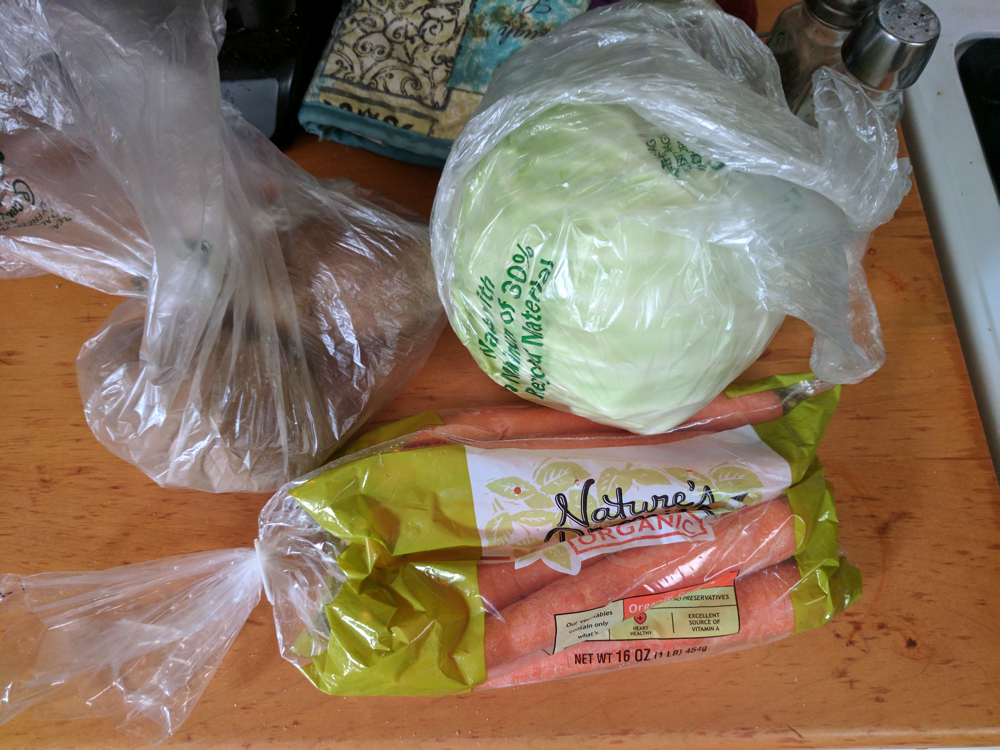
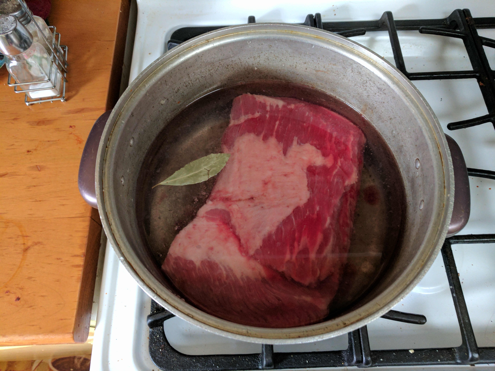
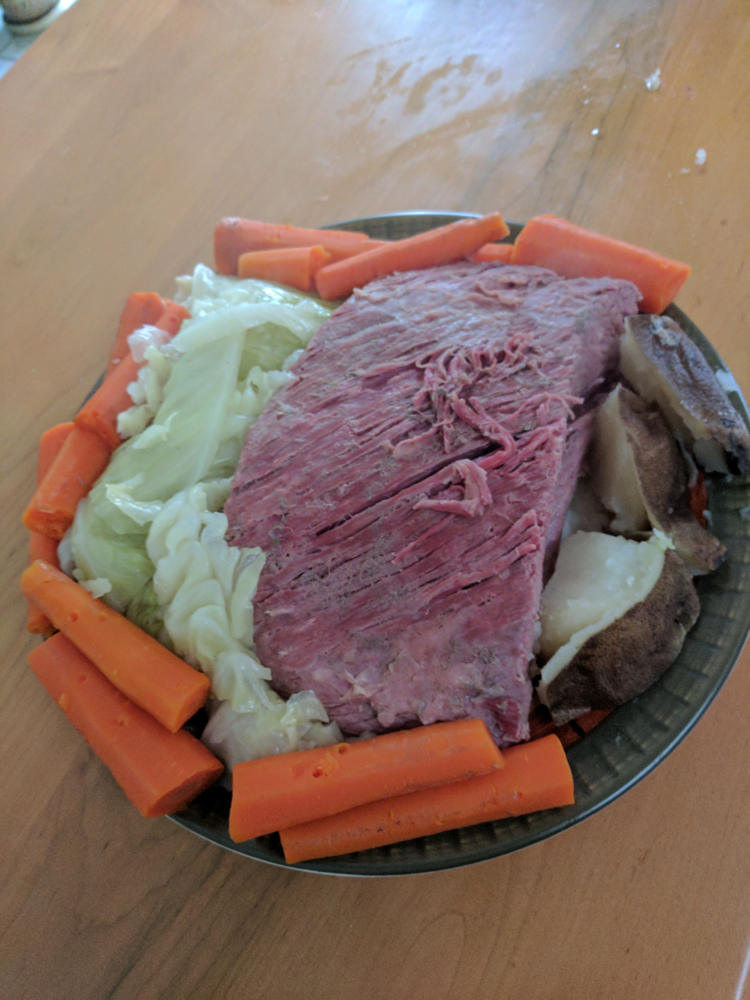

Corned Beef
Ingredients
- 1 package corned beef
- 1 half head of cabbage
- Carrots
- Potatos
How to cook
- Place the corned beef in a large pot and fill until it flows over the beef.
- If the beef came with a packet of spices, you can use that, or flavor it with whatever you would like!
- Put on low heat and simmer for 4-6 hours.
- Add cabbage, carrots and potatos to the pot and let cook for another 30 minutes.
- Drain the water and serve!
- 
- 
- 